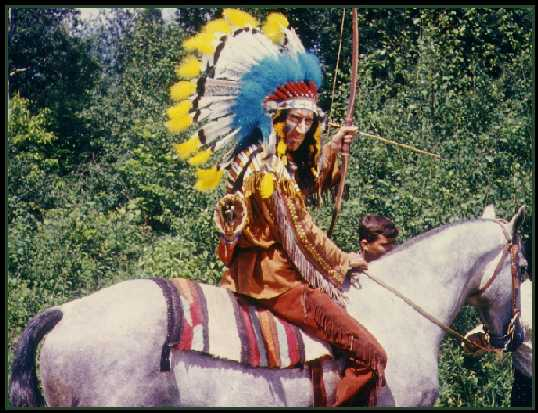
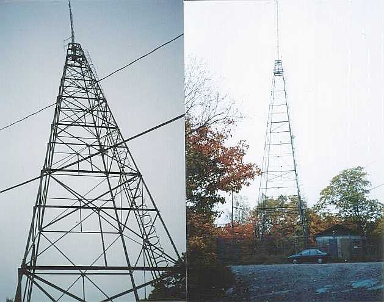
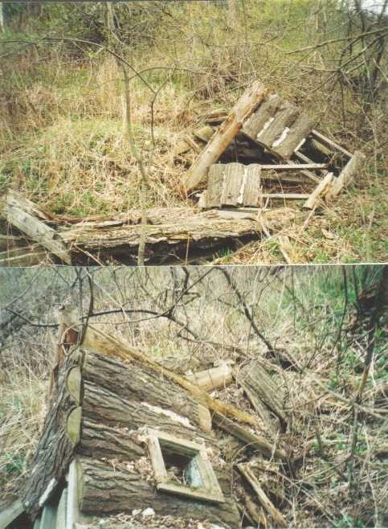
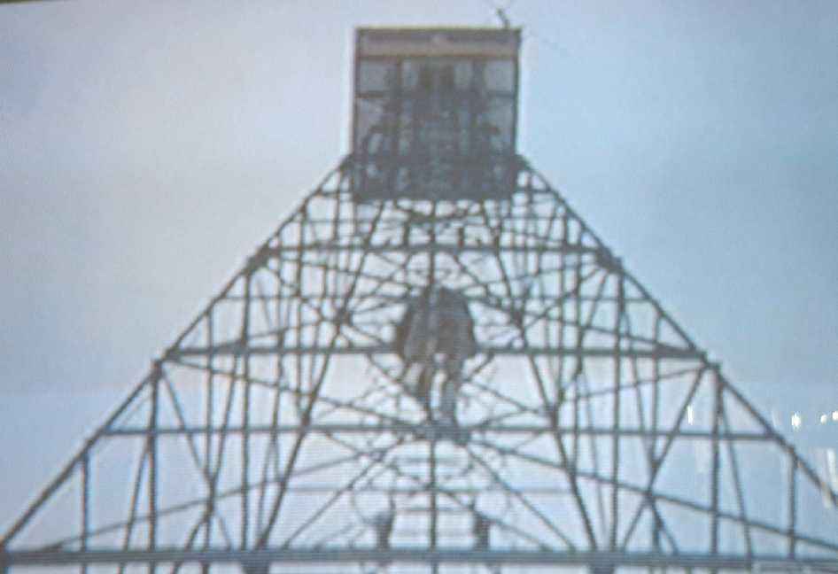
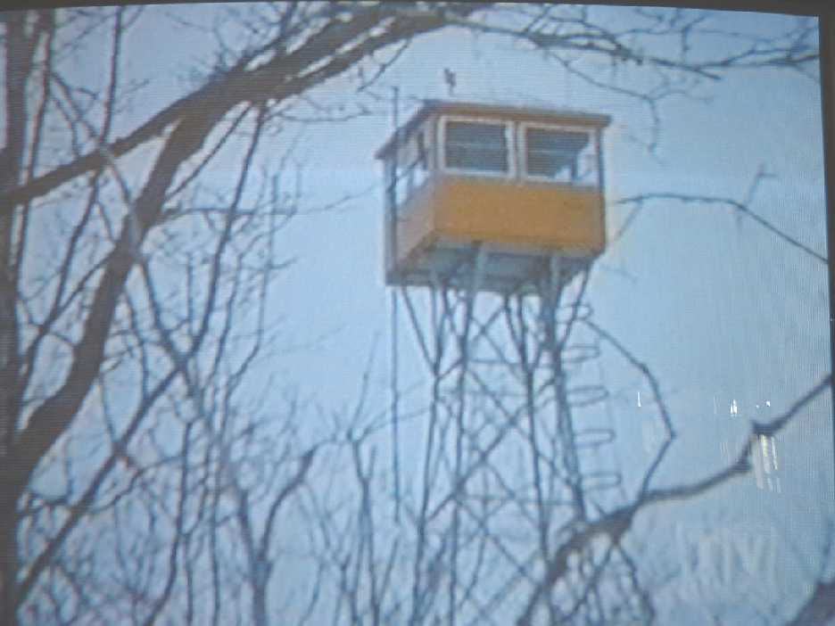

| CHECK OUT MY OTHER WEBSITES ENTITLED- 1) Blondie: The Movie Series here. 2) Canada Versus The Soviet Union: The Battle for World Hockey Supremacy (1972-1987) here. 3) Ontario's Fire Tower Lookouts here. 4) Adventures in Rainbow Country here. 5) Hawkeye and the Last of the Mohicans here. 6) Bowery Boys here. 7) Ma and Pa Kettle here. 8) My anthem theme music here. 9) My Side of the Mountain here. 10) ING Direct's $25 referral deal Orange Key here. 10) We All Have a Story to Share. Share your story here. 11) Spirit Bay here. 12) Shroud of Turin is a Fake here. | |||||||||||||||||
|  | |||||||||||||||||
| Eric Clavering as Shing Wauk sets up for a scene in the episode 'The Great Hypnotist when Mr. Mcleod hypnotizes him into believing he is his great grandfather during the old Indian warrior days of early Canadian history. The plan backfires on Mcleod when Shing Wauk goes crazy and starts letting arrows fly at his head. There is a funny story told to me by Eric's daughter about this episode. There was a scene where Shing Wauk has to put a knife into his mouth and climb up the fort's ladder. Well it happens that Eric's son was on set that day and was playing with this very knife which he accidentally dropped into some horse dung just before the scene was to be shot. Eric simply grabbed the knife and wiped it off and stuck it into his mouth- Yuck!!!!! | |||||||||||||||||
|  | |||||||||||||||||
| Here it is!!! I finally found it!!!! The remains of the fire tower used in the winter of 1965 when Joe climbs the tower to nab Finnigan's murderer. Through much research it was determined that the Widdifield Fire Tower in North Bay was the one used. The old crew from the show were unable to recall the location but when my friend Gary and I drove up to the site it was confirmed that indeed this was the tower. The cupola has been removed and this tower is now used as a radio tower. This was the main reason I started my Ontario's Fire Towers site- I wanted to find this very tower. To read about my search for this tower and the time and hard work I had to put in to determining that this was the tower click here. The next two photos below are from the tv show itself. One is the distant winter shot through the trees and the other shows Michael Zenon climbing up the tower in the sub-zero temperature to nab the killer. Below those photos is another special find. In the spring of 2003 I went back onto the Kleinburg studio lot, and low-and-behold I came upon the remains of Mcleod's old shack rotting in the ground in pretty much the exact place I figured it would have been located. I had walked by it twice before and never even saw it there due to the very high grass. But as u can see in the spring the grass is much shorter and getting a view is much easier. To see some new photos taken on the studio lot click here. |
|||||||||||||||||
|  | |||||||||||||||||
|  | |||||||||||||||||
|  | |||||||||||||||||
| BACK TO MAIN PAGE |
|||||||||||||||||
All 17 episodes from the seventh season--including "Running of the Bulls," "The Strange Ranger," "Big Guy Little Guy," "The Good Old Hockey Game," and "The Winter Carnival"--have been collected in a three-disc set.
The Incredible Journey [DVD](1963) DVD
When their masters go abroad on vacation and leave them in the care of a friend 200 miles away, a trio of homesick house pets--a bull terrier, Labrador pup, and Siamese cat--take their first chance to slip away, only to find themselves confronted with daunting adventures in the Canadian wilderness. Live-action Disney family classic from the Sheila Burnford book stars Emile Genest, John Drainie, Jan Rubes; Rex Allen narrates. 80 min. Widescreen; Soundtrack: English.
The Littlest Hobo TV Series Collection 1 [DVD]
One of the most popular family shows on '60s Canadian TV was revived in this 1979-85 incarnation. Join four-footed hero Hobo on his trek across the Great White North, as the German shepherd aids those he meets before heading back on the road.
Road To Avonlea: The Complete First Volume [DVD]
All 13 episodes from the first season--including "The Journey Begins," "Old Lady Lloyd," "Proof of the Pudding," "Conversions," and "Nothing Endures But Change"--are featured in a four-disc set.
Trailer Park Boys: The Movie [DVD](2006) DVD
Big-screen version of the popular Canadian sitcom chronicles the hilarious lives of the low-class residents of the Sunnyvale Trailer Park. When offbeat pals Ricky, Julian and Bubbles are released from prison after serving 18 months for robbing an ATM, they decide to pull off a final caper that could make them rich--or send them back to the big house. Robb Wells, John Paul Tremblay, Mike Smith star. 91 min. Widescreen (Enhanced); Soundtrack: English Dolby Digital 5.1; Subtitles: Spanish; deleted scenes; behind-the-scenes footage; interviews.
Canada Cup '76 [DVD] DVD
The Canada Cup was a six-team round robin international hockey tournament boasting the best players in the world. In 1976, Canada assembled perhaps the finest team ever put on ice with Bobby Clarke, Phil Esposito, Denis Potvin, and MVP Bobby Orr. This four-disc set features highlights of the entire tourney, plus six of Canada's seven games in their broadcast entirety, including the two exciting wins over Czechoslovakia in the final. 11 2/3 hrs. total. Standard; Soundtrack: English Dolby Digital mono; audio commentary; bonus documentary; photo gallery.
Leave It To Beaver: Season One [DVD](1957) DVD
All 39 episodes from the premiere season--including "Captain Jack," "The Haircut," "Beaver's Crush," "Wally's Girl Trouble," and "The State vs. Beaver"--are presented in a six-disc set. 17 1/4 hrs. total. Standard; Soundtrack: English Dolby Digital mono; Subtitles: English (SDH), Spanish; unaired pilot. **39 episodes on 6 discs. 17 1/4 hrs.**
The Wizard Of Oz (75th Anniversary) [Blu-ray](1939)
Follow Dorothy over the rainbow and down the Yellow Brick Road in one of the most beloved films in cinematic history. Not in Kansas anymore after a tornado whisks her away to the Land of Oz, Dorothy is off for adventure in the Emerald City with the Scarecrow, the Tin Woodsman, the Cowardly Lion, and Toto, too, all the while being chased by the Wicked Witch of the West and looking for a way home. Judy Garland, Ray Bolger, Jack Haley, Bert Lahr, Margaret Hamilton, and Frank Morgan star. 102 min. Standard; Soundtracks: English DTS HD 5.1 Master Audio, French Dolby Digital 5.1, Spanish Dolby Digital mono; Subtitles: English (SDH), French, Spanish; audio commentary; "making of" documentary; sing-along songs.
Little House On The Prairie: Season 1 [DVD]
All 23 episodes from the debut season--including "Harvest of Friends," "The Lord Is My Shepherd," "Christmas at Plum Creek," "The Circus" and "Founder's Day"--are featured in a six-disc set.
Star Trek: Season 1 [Blu-ray](1966)
All 29 episodes from the series's debut season--including "The Man Trap," "Where No Man Has Gone Before," the two-part "The Menagerie," "Balance of Terror," "This Side of Paradise," and "The City on the Edge of Forever"--are featured in a seven-disc set. Includes the broadcast versions of the episodes and the remastered versions featuring all-new CGI special effects. 24 1/3 hrs. total. Standard; Soundtracks: English DTS HD 7.1 Master Audio, Dolby Digital mono, French Dolby Digital mono, Spanish Dolby Digital mono; Subtitles: English (SDH), French, Portuguese, Spanish; featurettes. **29 episodes on 7 discs. 24 1/2 hrs.**
The Andy Griffith Show: Complete Series Collection [DVD] DVD
Forty-disc collector's set includes all eight seasons of the TV show, the 1960 "Make Room for Daddy" episode that introduced Sheriff Andy Taylor and the town of Mayberry, and the 1986 reunion movie "Return to Mayberry." 106 1/2 hrs. total. Standard; Soundtrack: English Dolby Digital mono.
Gilligan's Island: The Complete First Season [DVD]
All 36 episodes from season one--including "Two on a Raft," "Good Night, Sweet Skipper," "Wrongway Feldman," "Gilligan Meets Jungle Boy," and "Voodoo Something to Me," as well as the original unaired pilot--are featured in a three-disc set.
M*A*S*H: Season One [DVD]
All 24 episodes from the debut season--including the pilot, "Chief Surgeon Who?," "Yankee Doodle Doctor," "Dear Dad," and "Sometimes You Hear the Bullet"--are featured in a three-disc set.
The Dukes Of Hazzard: The Complete Seasons 1-7 [DVD]
Follow the Dukes and the General Lee in everybody's secret favourite tv show.
Monty Python And The Holy Grail (Collector's Edition) [DVD](1975) DVD
The legend of King Arthur will never be the same once the Pythons get through with it. Klutzy knights, killer rabbits, coconut-laden swallows, taunting Frenchmen and other oddities all add up to one of the funniest, most outrageous comedies ever. Graham Chapman, John Cleese, Eric Idle, Terry Gilliam, Terry Jones, Michael Palin star. 90 min. Widescreen; Soundtracks: English Dolby Digital 5.1, Dolby Digital mono, Japanese; Subtitles: English, French, Spanish; screenplay; audio commentary by Jones, Gilliam, Cleese, Idle, Palin; animated menus; sing-along songs; documentary; featurettes; cast directory; theatrical trailers; film cel senitype; paperback of the script. Two-disc set.
Keeping Up Appearances: Collector's Edition [DVD] DVD
All 40 episodes and four Christmas specials, plus the retrospective programs "The Memoirs of Hyacinth Bucket" (1997) and "Life Lessons from Onslow" (2008), are featured in a 10-disc set. 22 1/2 hrs. total. Standard; Soundtrack: English; outtakes; featurettes; interviews. **40 episodes and 6 specials on 10 discs. 22 1/2 hrs.**
Coronation Street: 3 DVD Boxed Set [DVD] DVD
Say goodbye to one of Corrie Street's most roguish personalities in "Coronation Street: Farewell to Mike," as Mike Baldwin (Johnny Briggs) takes his leave of the popular program after three decades of devilishly entertaining exploits. In this tribute program, Briggs is honored by his many co-workers and seen in a montage of clips. Narrated by Matthew Kelly. Three-disc set also includes "An Audience with Coronation Street," "Coronation Street: Family Albums." 135 min. total. Soundtrack: English.
Star Wars: The Complete Saga [Blu-ray]
Nine-disc set includes "Star Wars: Episode I: The Phantom Menace," "Star Wars: Episode II: Attack of the Clones," "Star Wars: Episode III: Revenge of the Sith," "Star Wars: Episode IV: A New Hope," "Star Wars: Episode V: The Empire Strikes Back," "Star Wars: Episode VI: Return of the Jedi," and three discs packed with bonus features. 2011 re-release editions.
The Beatles Anthology [DVD]
The long-awaited definitive Fab Four retrospective (five hours of which are exclusive to video) of pop music's most beloved and influential band traces The Beatles' evolution from their earliest efforts to their bitter break-up in 1970. Recent interviews with Paul, George and Ringo are woven through live concert footage, rare studio clips, home movies, press conferences and backstage footage to tell the definitive story of the four lads from Liverpool.
Don Cherry's Hard-Hitting Hockey [DVD](2008) DVD
Don Cherry is a former hockey player and coach who won the NHL Jack Adams Award for best coach during his days with the Boston Bruins in the '70s. However, Cherry is best known these days as the voice of the CBC's "Hockey Night in Canada" who possesses a penchant for hard-nosed play. Join him for highlights of the 2007-2008 NHL season that features hits, bloopers, and scraps, all delivered in the classic Don Cherry style. 62 min. Standard; Soundtrack: English; Subtitles: English (SDH). NOTE: This Title Is Out Of Print; Limit One Per Customer.
The Lord Of The Rings: The Motion Picture Trilogy (Widescreen Version) [DVD]
Special six-disc boxed set includes widescreen versions of "The Lord of the Rings: The Fellowship of the Ring," "The Lord of the Rings: The Two Towers," and "The Lord of the Rings: The Return of the King."
The Adventures Of Ma And Pa Kettle, Vol. 1 [DVD]
First, the hillbilly husband and wife played by Marjorie Main and Percy Kilbride are introduced in the all-time favorite barnyard comedy "The Egg and I" (1947), with Claudette Colbert and Fred MacMurray. Then, the Kettle clan is about to be run out of their home until Pa wins "the home of the future" in a slogan-writing contest in "Ma and Pa Kettle" (1949). AKA: "The Further Adventures of Ma and Pa Kettle." The Kettles find themselves in New York where they unwittingly help a crook on the lam in "Ma and Pa Kettle Go to Town" (1950). Finally, Ma and Pa head back to the homestead when they think there's uranium on the premises in "Ma and Pa Kettle Back on the Farm" (1951).
.